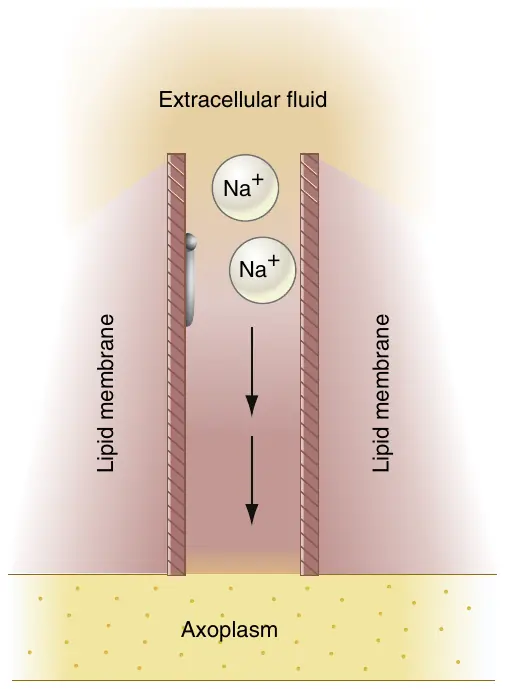
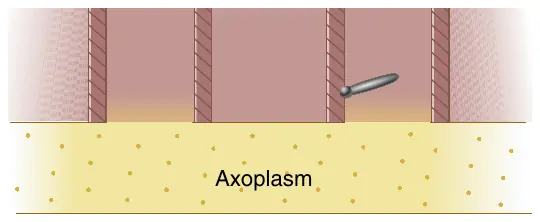

نسخه استخراجشده؛ ترجمه یا تأیید علمی انجام نشده است. وضعیت: captured
پس از بلاک عصب آلوئولار تحتانی (IANB)، تزریقی که دندانهای فک پایین یک سمت را بیحس میکند، لب بیمار کرخت است و تراش مینا را بیدردسر تحمل کرده. همین که فرز به عاج نزدیک پالپ میرسد، دستش را بالا میآورد. چرا محرک ضعیفتر به مغز نرسید و محرک قویتر رسید؟

عصب در حال استراحت پتانسیل استراحت دارد: درون غشا حدود منفی ۷۰ میلیولت نسبت به بیرون. این اختلاف از تفاوت غلظت یونها میآید:
تغییر کمتر از ۱۵ میلیولت ایمپالسی نمیسازد. ایمپالسی که راه افتاد، اندازه و شکلش با قویتر شدن محرک عوض نمیشود. بیحسی موضعی آستانه را بالا میبرد: سدیم بیشتری لازم است تا غشا به آستانه برسد. در بلاک ناقص، محرک قویتر ممکن است هنوز به این آستانهی بالاتر برسد.
دپلاریزاسیون با غیرفعال شدن کانالهای سدیم پایان میگیرد. همزمان پتاسیم از سلول بیرون میرود و غشا به منفی ۷۰ برمیگردد. رپلاریزاسیون حدود ۰٫۷ میلیثانیه طول میکشد و کل چرخه حدود ۱ میلیثانیه.

در دورهی تحریکناپذیری مطلق هیچ محرکی، هرچقدر قوی، ایمپالس تازه نمیسازد. در دورهی نسبی فقط محرکی قویتر از معمول میتواند.
اشتباه رایج: خیال کنی بیحسی موضعی غشا را منفیتر (هایپرپلاریزه) میکند. پتانسیل استراحت و رپلاریزاسیون دست نمیخورند؛ اثر اصلی بر دپلاریزاسیون است و غشا به آستانه نمیرسد.